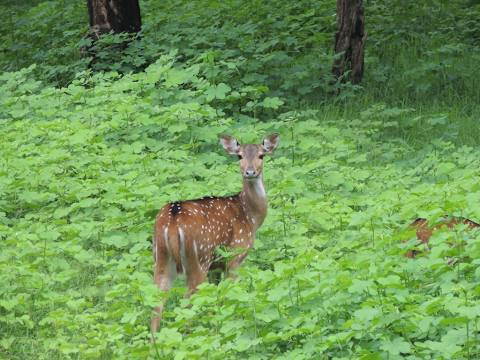

Have any question?
Dial toll free No: +12 365 5233

ABOUT DISTRICT
Palakkad: Rice Bowl of Kerala
Palakkad is one of the fourteen districts of Kerala and has no coastal line. The district opens the state to the rest of the country through the Palakkad Gap with a width of 32 to 40 Kms. Its geographical position, historical background, educational status, tourism hot-spots and above all, the development activities that are carried out, are wide and varied. The district is one of the main granaries of Kerala and its economy is primarily agricultural. The district is also the land of Palmyrahs.

Nelliyampathy: is a hill station within the Nelliyampathy Forest Reserve, in the southwest Indian state of Kerala. The road to it, which goes through the dense forests of the Western Ghats, is known for its many hairpin...more
Palakkad Fort: is an old fort situated in the heart of Palakkad town of Kerala state, southern India. It was recaptured and rebuilt grandly by Sultan Hyder Ali in 1766 A.D and remains one of the best-preserved forts in Kerala.

Parambikulam Tiger Reserve: which also includes the erstwhile Parambikulam Wildlife Sanctuary, is a 391 square kilometres protected area in Kollengode Block, Chittur taluk in Palakkad district of Kerala state, South...more

Silent Valley National Park: is a beautiful representation of the last remaining rain forest of Kerala. Historically it’s a paradigm of people’s movement to protect the forest. Silent Valley was declared as National Park...more in 1984 and formally inaugurated in the year 1985. Initially there was only 89.52 sq.km. area under the Division which forms the core zone of the National Park. In 2007, an area of 148 sq.km. was added to this Division as buffer zone. In 1914, Silent Valley forests were declared as Reserved Forest.